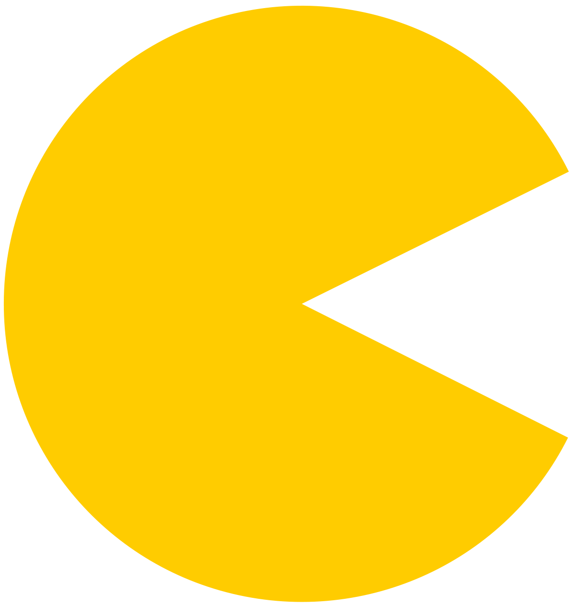

Pac-Man
Iedereen kent Pac-Man, een echte klassieker, voor het eerst uitgebracht op 22 mei 1980 als arcadespel. Van dit computerspel, dat ontwikkeld is door Namco, werden binnen een jaar 100 0000 arcademachines verkocht. Dit maakt het één van de succesvolste computerspellen aller tijden.
Het Spel
Je speelt als een geel happertje: Pac-Man  en je doel is om alle bolletjes in het doolhof op te eten, dan win je. Er zijn ook vruchtjes te vinden op het speelveld, die extra punten opleveren. Wat het spel moeilijk maakt zijn de 4 spookjes  die rondzweven. Als Pac-Man door een spook gepakt wordt, is hij dood en verlies je 1 van de 3 levens. Je verliest wanneer die levens op zijn. Ook zijn er grote bollen te vinden in het doolhof, deze maken de spookjes blauw en kwetsbaar waardoor Pac-Man ze kan opeten. Hierdoor teleporteert het spookje terug naar de kooi in het midden.
die rondzweven. Als Pac-Man door een spook gepakt wordt, is hij dood en verlies je 1 van de 3 levens. Je verliest wanneer die levens op zijn. Ook zijn er grote bollen te vinden in het doolhof, deze maken de spookjes blauw en kwetsbaar waardoor Pac-Man ze kan opeten. Hierdoor teleporteert het spookje terug naar de kooi in het midden.
Spin-Offs
Er zijn heel veel spin-offs gemaakt van Pac-Man, dit zijn enkele spin-offs (maar niet alle):
- Ms. Pac-Man (1981) - Een vrouwelijke Pac-Man in de hoofdrol
- Pac-Land (1984) - een side-scrolling action/platformspel
- Pac-Man VR (1996)
- Pac-Man Crisis (2002) - Eerste game voor mobiele telefoon
- Pac-Man: 25th Anniversary (2005)
- Pac-Man World Rally (2006)
- Pac-Man 256 - Endless maze (2015)
Fun Facts
Enkele fun facts:
- De eerste persoon die een perfecte score haalde is William James Mitchell Jr. met een score van 3 333 360, maar is later het snelst gehaald door David Race in 3u 26m 49s
- Er zijn veel films en series gemaakt over Pac-Man of waar hij in verschijnt, zoals Pac-Man and the Ghostly Adventures en Pixels.
- De spoken heten Blinky, Pinky, Inky en Clyde en hebben elk hun eigen A.I. met andere personaliteiten.
Bronnen
- Wikipedia
- Engelse Wikipedia
- Billy Mitchel (record score)